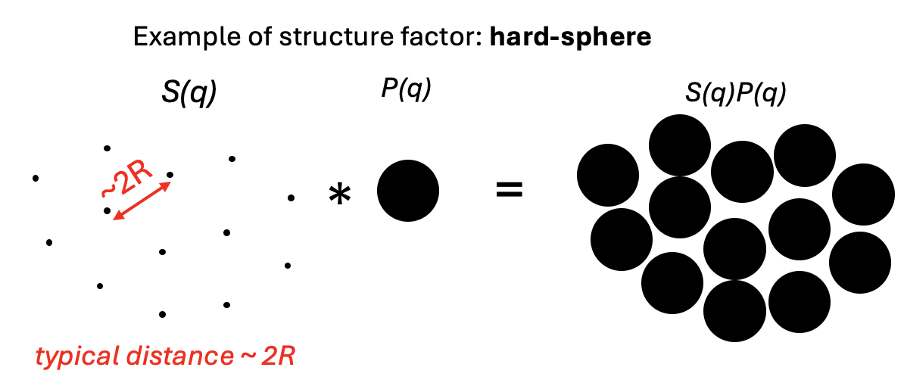
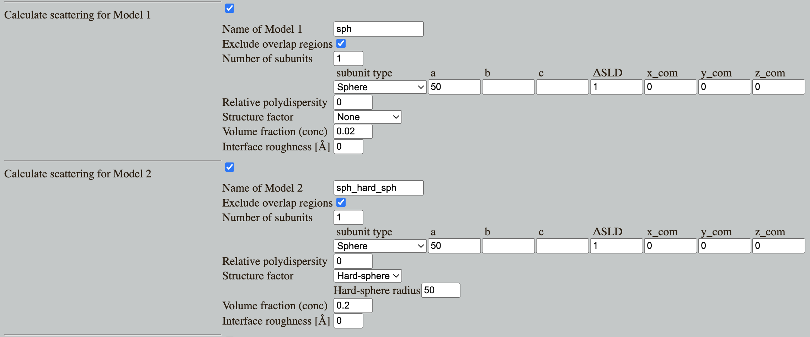

Home
Tutorial: Structure Factors
Contributors: Andreas Haahr Larsen, Jeppe Breum Jacobsen.

If there are interparticle interactions, and if the particles are close enough that they have an effect, structure factors come into play in the analysis of small-angle scattering data.
Before you start
- Download and install SasView (on MacOS: you need to install Xcode first).
- Basic knowledge of fitting in SasView is assumed, e.g. from the Spheres tutorial.
Learning outcomes
Learn to model interparticle interactions in small-angle scattering using structure factors- Identify the effects of hard-sphere interactions in densely packed samples.
- Learn to include structure factors in model fitting in SasView.
Introductory remarks
The form factor describes the shape of particles (see the Spheres tutorial). But if there is correlation between where the particles are with respect to each other (i.e. they are not randomly distributed), i.e. if there is interparticle interactions, the form factor is not sufficient to describe the scattering.
In that case, one needs to include a structure factor to describe these interactions.
Part I: Spheres with interparticle repulsion (hard-sphere structure factor)
If the concentration of particles in as sample is high, they may frequently "bump into each other". This will give rise to some characteristic distances (2 times the radius), which gives rise to change of the scattering.The additional scattering can (for some samples) be described by a so-called hard-sphere structure factor. 
Illustration of a hard-sphere structure factor for a highly concentrated sample of spheres, giving rise to a characteristic distance. The scattering is the product of the form factor, $P(q)$), and the structure factor, $S(q)$.
To see the effect of interparticle interactions, go to: Shape2SAS, and simulate a sphere with a radius of 50 Å as Model 1 and a sphere with radius of 50 Å and hard sphere structure factor with volume fraction 0.2 and hard-sphere interaction radius of 50 Å as Model 2. 
You will notice a "dip" at low $q$, which is characteristic for the hard-sphere structure factor. If an experimentalist is not interested in this effect, it may be removed by lowering the sample concentration. Try to simulate this by decreasing the volume fraction in the simulations (i.e the concentration), to see the structure factor effect gradually disappearing.
Try also to fit the data is SasView.
- Including a structure factor in SasView:
- Download the simulated data for spheres with hard-sphere structure factor and volume fraction 0.2 (or use this example data)
- Load the data into SasView and fit a sphere form factor (no polydispersity) - observe how the model fit deviates from the data, due to interparticle interactions.
- Add a hard-sphere structure factor to the fit. Structure factors are selected in the third drop-down menu in the Fit panel.

Does the fitted values match the input values for the simulations?
Part II: Structure factors for aggregates
Some particles have a tendency to aggregate (be "sticky"). This may be proteins or nanoparticles. If a part of the sample aggregates (sticks together), the scattering (i.e. $I(q)$) will be the sum of scattering from the aggregate and from the non-aggregated particles.
Aggregates may also be described by structure factors (although very different from the hard-sphere structure factor), and as we shall see, having the opposite effect.
Go to: Shape2SAS, and simulate a sphere with a radius of 50 Å as Model 1 and a sphere with radius 50 Å and aggregate structure factor with fraction of 0.01 (i.e. 1% of the particles are in an aggregate), effective radius of 50 Å, and 80 particles per aggregate as Model 2.
Model 1 corresponds to a sample without aggregation, and Model 2 corresponds to a sample, where 1% of the spheres are in aggregated form, with 80 spheres per aggregate. The resulting scattering may look like this (note: the aggregation is not included in the $p(r)$):

Comment the results. Try varying the fraction (i.e. degree of aggregation) and the number of particles per aggregate (the size of the aggregates). Notice how this results in an upturn at low-$q$ - i.e. opposite the dip at low-$q$ for the hard-sphere structure factor.
Note on the aggregate model: a 2-dimensional fractal aggregate structure factor (Larsen, Pedersen and Arleth 2020) was used to simulate aggregation in Shape2SAS, but many different aggregates are possible in a real sample.
Currently, this structure factor is not implemented in SasView - maybe this is a task for you?
Challenges
- Challenge 1: You have measured the protein bovine serum albumin (BSA) and are interested in knowing if there is interparticle interactions at the measured salt conditions and concentration (SAXS data). Is that the case? (Hint)
- Challenge 2: Spherical nanoparticles were measured at high concentration (high conc data) and low concentration (low conc data). What are their shape and size (distribution)? (Hint)
Perspectives
- Repeated distances (as known from diffraction) leads to Bragg peaks, which may be included in the model as a structure factor, see the tutorials about liquid crystals and lamellar structures.
- In some cases, only the structure factor (not the form factor) is of interest, and the form factor may not be fitted. This can be done in SasView, by choosing Structure factors under Category. In that case the form factor is set to unity, $P(q)=1$ (form factor for a point).
Help and feedback
Help us improve the tutorials by- Reporting issues and bugs via our GitHub page. This could be typos, dead links etc., but also insufficient information or unclear instructions.
- Suggesting new tutorials/additions/improvements in the SAStutorials forum.
- Posting or answering questions in the SAStutorials forum.